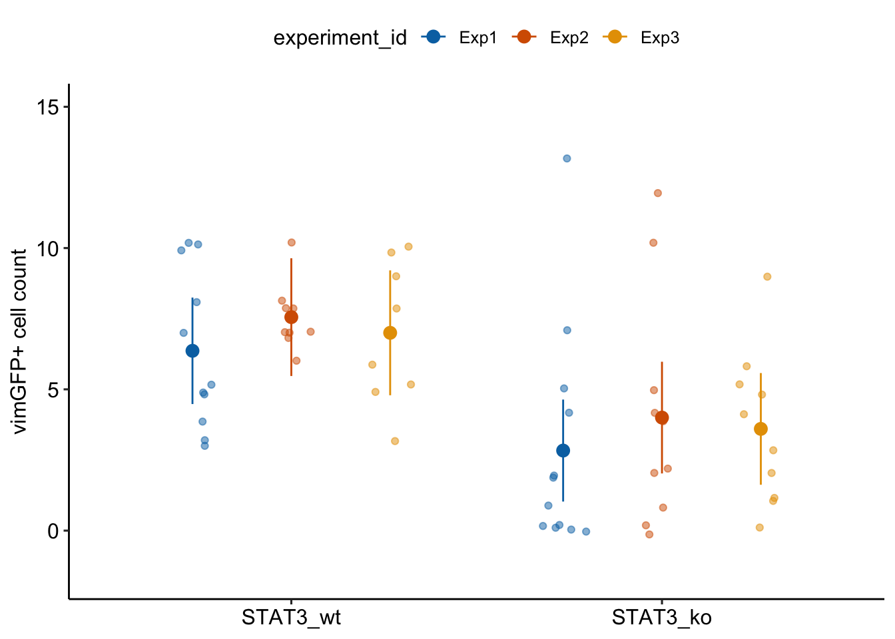
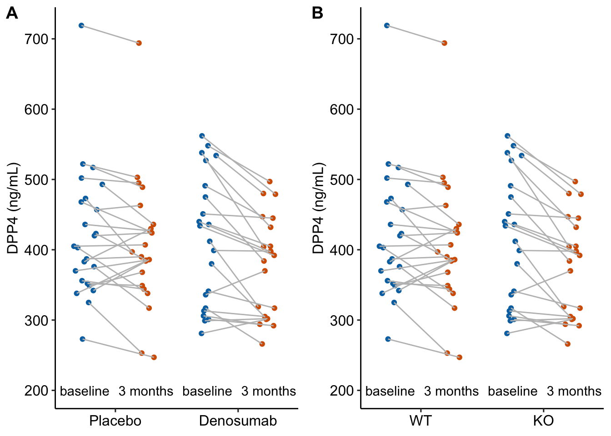
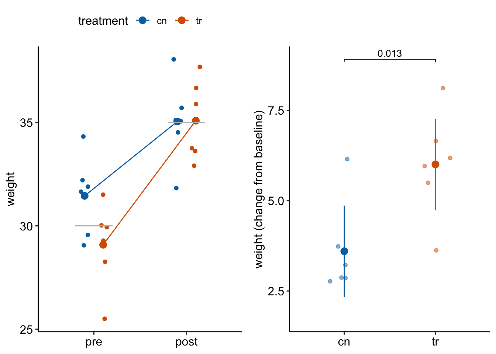
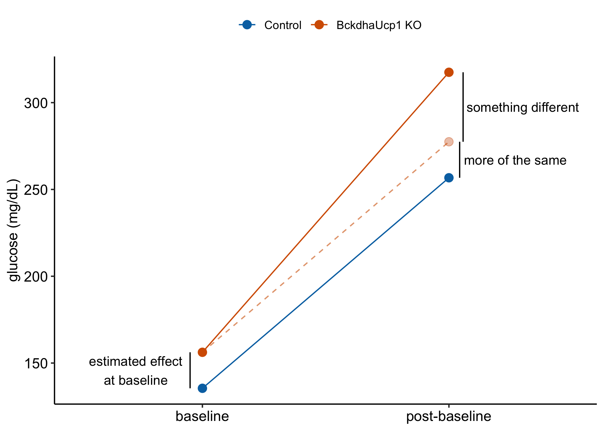
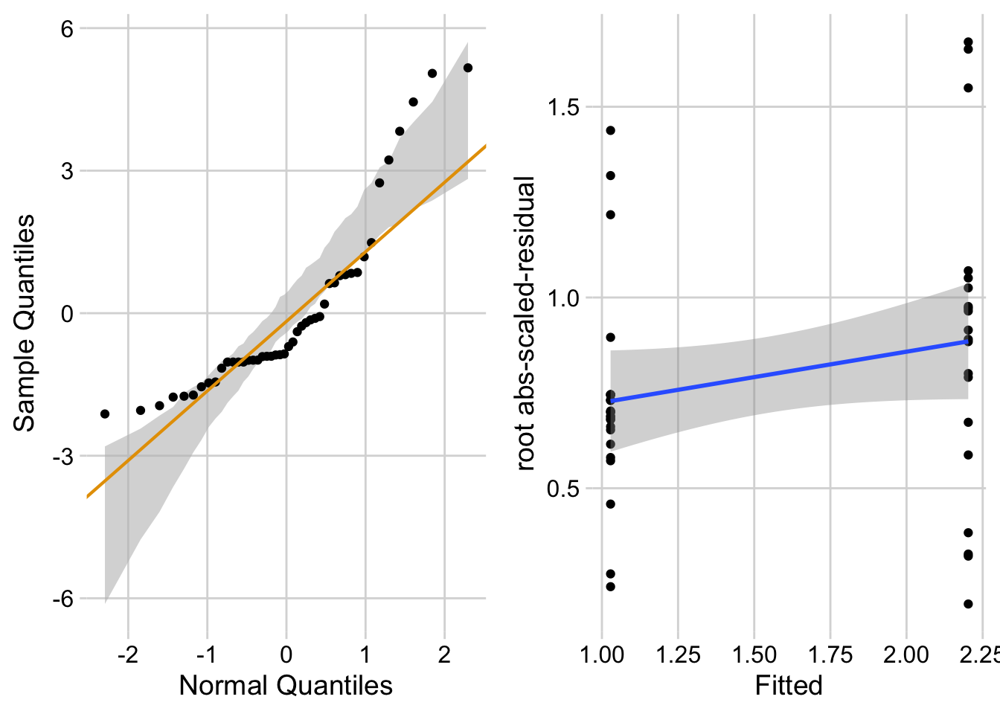

13.1 Replicated experiments – include \(\texttt{Experiment}\) as a random factor (better than one-way ANOVA of means)
Replicated experiments are the norm in bench biology. Researchers most commonly 1) analyze the mean response from each replicate, 2) pool all the data, ignoring that they come from multiple, independent experiments, or 3) analyze a “representive” experiment.
The best practice for analyzing data from multiple, independent experiments, one that is almost never used outside of certain subfields where pipelines for this alternative exist, is a linear mixed model with the experiment id added as a random factor. A mixed-effect or repeated measures ANOVA is equivalent to one version of this kind of linear model. The analysis of data from pooled independent experiments with a linear mixed model is a best practice because it increases precision and power relative to a t-test/ANOVA of experiment means and avoids pseudoreplication.
It’s important to understand the assumptions of the different models for analyzing replicated experiments. In a study with multiple, replicated experiments, the replications are “independent” – solutions are re-made, instruments have drifted and are re-calibrated, the grad student doing the work has lived another day. Each experiment has a unique set of factors that contribute to the error variance of the response variable. All measures within an experiment share the component of the error variance unique to that experiment and, as a consequence, the error (residuals) within an experiment are more similar to each other than they are to the residuals between experiments. This is a violation of the independent sampling assumption of the linear model and the lack of independence creates correlated error. The consequences of this on the three analyses are:
Linear model/t-test/ANOVA of pooled data ignoring experiment. This model assumes perfect replication between experiments, that essentially, the world was exactly the same for each. If this assumption is true, each replicate within each experiment is an independent data point. A study with n = 5 mice per treatment replicated five times has n = 25. If there are two treatment levels, the t-test will have 48 df. But, if the measures within an experiment share a common source contributing to the variance of the response within that experiment (the temperature in the room was 1°C cooler causing a machine to give a slightly different reading), there are not 25 independent measures because the five measures within each experiment are not independendent. The true df will be less than 48, how much less depends on the magnitude of the correlated error resulting from the non-independence. Pooling data across experiments with correlated error creates an incorrectly small standard error of the mean, resulting in incorrectly narrow confidence intervals and incorrectly small p-values. Pooling data inflates false discovery.
Linear model/t-test/ANOVA of experiment means. Analysis of the means violates the independence assumption because the means of the treatment levels within an independent experiment are expected to share common sources of measure variability of that experiment. Instead of inflating false discovery, this correlated error generally works against discovery. The correlated error among the means can be modeled to increase precision and gain power.
Linear model of the experiment means with \(\texttt{experiment\_id}\) added as a random factor to account for correlated error due to the unique sources of variance within each experiment. This model is equivalent to a mixed effect ANOVA of the full data set.
Reproducibility blues. Researchers are improving best practices by archiving data on public servers. Nevertheless, it is extremely rare to find the full data for many experiments. For analyses of the means from multiple experiments, researchers almost always archive the means – the data are means pooled – and not the full set of measurements from each experiment. Or, the full data are archived but the experiment id is not included – the data are complete pooled. There is no way to truly replicate a result if only the means are archived (were the means computed correctly?). And, there is no way to re-analyze the data with alternative models that require the full data with the experiment identified.
13.1.1 Multiple experiments Example 1 (wound healing Exp4d)
The experiment was designed to estimate the effect of a STAT3(https://en.wikipedia.org/wiki/STAT3){target=“_blank”} knockout on the number of cells expressing the cytoskeletal protein vimentin in the wounded tissue.
Following Fisher, we can be more confident of an effect if we consistently get small p-values from replicate experiments.
ids <-levels(exp4d[, experiment_id])n_exp <-length(ids)p <-list()for(exp_i in ids){ exp4d_m1 <-lm(vimentin_cells ~ genotype,data = exp4d[experiment_id == exp_i,]) # subset exp4d_m1_test <-coef(summary(exp4d_m1)) p[[exp_i]] <- exp4d_m1_test["genotypeSTAT3_ko", "Pr(>|t|)"]}data.table(experiment = ids,p =unlist(p)) |>kable(digits =3,caption ="P-values from the three independent experients of the exp4d data.") |>kable_styling()
P-values from the three independent experients of the exp4d data.
experiment
p
Exp1
0.023
Exp2
0.022
Exp3
0.017
There are methods for combining p-values but we do not need to do this because we have the raw data.
13.1.2 Models for combining replicated experiments
A linear mixed model for combining replicated experiments is most easily fit using the aov_4 function from the afex package. The aov_4 function fits a mixed-effects ANOVA model, which is a factorial ANOVA that includes both fixed and random factors. In the Experiment 4d data, the variable \(\texttt{genotype}\) is a fixed factor and the variable \(\texttt{experiment\_id}\) is a random factor. More information on fixed and random factors is given in the Linear Mixed Model chapter.
The mixed-effect ANOVA models fit by aov_4 are not linear mixed models but inference is equivalent in balanced designs – I give more detail below. The aov_4 function uses a linear mixed model formula interface and is a useful substitute for actually fitting the equivalent linear mixed model because fitting a linear mixed model can be sensitive to the data and sometimes fails, even if the mixed-effect ANOVA model “works”.
# wrangling to get this to work# ggplot_the_response doesn't like the fit object from afex. That's okay,# we use it only to get the individual pointsexp4d_m0 <-lm(vimentin_cells ~ genotype,data = exp4d)exp4d_m0 <-lm(vimentin_cells ~ genotype * experiment_id,data = exp4d)exp4d_m0_emm <-emmeans(exp4d_m0, specs =c("genotype", "experiment_id"))ggplot_the_response(fit = exp4d_m0,fit_emm = exp4d_m0_emm,fit_pairs = exp4d_m1_pairs,y_label ="vimGFP+ cell count",palette = pal_okabe_ito_blue)

13.1.3 Understanding Model exp4d_m1
The univariate and multivariate models fit by aov_4 gives researchers an easy tool in R for replicating ANOVA results from other software, such as Graphpad Prism or JMP. But it is really the contrasts that we want, not the ANOVA table, and we can get these contrasts by passing the aov_4 object to emmeans.
A linear model of the aggregated data with adjusted degrees of freedom (the “aov” or univariate model). “Aggregated” data are the means of each treatment level within each experiment (the means-pooled data).
A multivariate linear model (the multivariate model) of the aggregated data. A multivariate model has multiple Y variables. For the exp4d data, each experiment (containing the means for each treatments) is a seperate \(Y\) variable.
The default output is the univariate model but the researcher can choose the multivariate model.
Contrasts from the univariate and multivarate models fit to the exp4d data.
contrast
estimate
SE
df
lower.CL
upper.CL
t.ratio
p.value
univariate model (m1)
STAT3_ko - STAT3_wt
-3.5
0.048
2
-3.7
-3.29
-72.52
0.00019
multivarite model (m2)
STAT3_ko - STAT3_wt
-3.5
0.048
2
-3.7
-3.29
-72.52
0.00019
The univariate and multivariate models are the same when there is only a single factor with two treatment levels, as with these data. Otherwise the two differ. See Section Section 16.15.2 in the Linear Mixed Models chapter.
The univariate model is equivalent to the linear mixed model exp4d_m2 (see next section) of the aggregated data if there are no missing data.
If there are the same number of replicates within all treatment by experiment combinations, then the univariate model is equivalent to the linear mixed model exp4d_m3 of the full (not aggregated) data.
13.1.4 The univariate model is equivalent to a linear mixed model of the aggregated data (Model exp4d_m2)
aggregate the data
# compute the experiment meansexp4d_means <- exp4d[, .(vimentin_cells =mean(vimentin_cells)), by = .(genotype, experiment_id)]
Contrasts from the univariate model fit by AOV_4 (exp4d_m1) and the linear mixed model of the aggregated data (exp4d_m2)
contrast
estimate
SE
df
lower.CL
upper.CL
t.ratio
p.value
univariate model (exp4d_m1)
STAT3_ko - STAT3_wt
-3.5
0.048
2
-3.7
-3.29
-72.52
0.00019
linear mixed model (exp4d_m2)
STAT3_ko - STAT3_wt
-3.5
0.048
2
-3.7
-3.29
-72.52
0.00019
Notes
The univariate model is equivalent to Model exp4d_m2 only if there is no missing data (for example, one treatment has no data in experiment 2). 2.The factor \(\texttt{experiment\_id}\) is added as a random intercept using the formula notation (1 | experiment_id). This random intercept models common variation shared within experiments.
Model exp4d_m3 is equivalent to the univariate mixed-effect ANOVA (exp4d_m1) and the linear mixed model of the aggregated data (exp4d_m2) if there are the same number of subsamples in every genotype by experiment combination.
Model exp4d_m3 is a linear mixed model with the random factor added as two random intercepts.
The (1|experiment_id) intercept models common variation shared within experiments.
The (1|experiment_id:genotype) is an interaction intercept that models common variation shared within experiment by genotype combinations.
The function lmer returns the “boundary (singular) fit” message, which is a warning to researchers to use caution if using the model for inference. This message will not be rare when the the number of experiments is small (2-4).
Note 5 raises the question, why bother with the linear mixed model of the full data when the aov_4 function always “works” and is the same when the design is balanced? The short answer is, just use the aov_4 model with the default (univariate model) outputs. The long answer is, read chapter Models with random factors – linear mixed models.
13.1.6 Analysis of the experiment means has less precision and power
Compare inference from the mixed-ANOVA exp4d_m1 or the linear mixed model exp4d_m2 (these are the same) to a linear model of the experiment means (equivalent to a t-test/ANOVA)
exp4d_m4 <-lm(vimentin_cells ~ genotype, data = exp4d_means)
Contrasts from the univariate model fit by AOV_4 (exp4d_m1) and the linear model of the experiment means (exp4d_m4)
contrast
estimate
SE
df
lower.CL
upper.CL
t.ratio
p.value
univariate model (exp4d_m1)
STAT3_ko - STAT3_wt
-3.5
0.048
2
-3.70
-3.29
-72.52
0.00019
linear model (exp4d_m4)
STAT3_ko - STAT3_wt
-3.5
0.486
4
-4.84
-2.15
-7.20
0.00197
Notes
Model exp4d_m4 violates the independence assumption because residuals within an experiment are expected to be more similar. Analyzing the experiment means does not fix this. With the aggregated data, this correlated error masks the true effect.
The SE for the estimate of the \(\texttt{genotype}\) effect is much smaller for the mixed ANOVA/random intercept model than for the fixed effect model of experiment means.
The degrees of freedom for the fixed effect model is slighly larger than that for the mixed model exp4d_m1. Degrees of freedom is a measure of independent variation – the fixed effect model assumes that every measure is independent. They aren’t. The inflated degrees of freedom is pseudoreplication.
Despite the (slightly) inflated degrees of freedom of the fixed effects model, the mixed model has much more narrow CIs and smaller p-value. This is because of item 2.
The increased precision and power of the mixed model relative to the fixed effect model of the experiment means is a general result and not one specific to this example.
13.1.7 Don’t do this – a t-test/fixed-effect ANOVA of the full data
exp4d_m5 is a fixed effect model (there are no added random factors).
exp4d_m5 <-lm(vimentin_cells ~ genotype, data = exp4d)
Contrasts from the univariate model fit by AOV_4 (exp4d_m1) and the linear model of the full data (exp4d_m5)
contrast
estimate
SE
df
lower.CL
upper.CL
t.ratio
p.value
univariate model (exp4d_m1)
STAT3_ko - STAT3_wt
-3.50
0.048
2
-3.70
-3.29
-72.52
0.00019
linear model (exp4d_m5)
STAT3_ko - STAT3_wt
-3.49
0.789
58
-5.07
-1.91
-4.42
0.00004
Notes
Model exp4d_m4 violates the independence assumption because residuals within an experiment are expected to be more similar.
The SE for the estimate of the \(\texttt{genotype}\) effect is much smaller for the mixed ANOVA/random intercept model than for the fixed effect model but the degrees of freedom for the fixed effect model is much greater than that for the mixed model exp4d_m1. Degrees of freedom is a measure of independent variation – the fixed effect model assumes that every measure is independent. They aren’t. The inflated degrees of freedom is pseudoreplication.
The consequence of the pseudoreplication is a too-small p-value. Pseudoreplication leads to more false discovery.
13.2 Comparing change from baseline (pre-post)

Serum DPP4 levels at baseline and 3 months in two groups. (A) The actual experiment: the two treatment levels are randomly allocated to treatment at baseline. We are interested in the effect of DMAB at 3 months and use the baseline measure to increase precision. (B) A thought experiment: the two treatment levels are different groups at baseline. We give DMAB to both groups at baseline to estimate the difference in response.
In a longitudinal experiment, the response variable is measured on the same individuals both before (baseline) and after (post-baseline) some condition is applied. Experiments in which only one post-baseline measure is taken are known as pre-post experiments. For simplicity, I call the baseline measure \(\texttt{pre}\) and the post-baseline measure \(\texttt{post}\).
Researchers often analyze pre-post data by comparing the change score (\(\texttt{post} - \texttt{pre}\)) between the groups using a \(t\)-test or one-way ANOVA (or a non-parametric equivalent such as Mann-Whitney-Wilcoxon). The linear model form of the t-test is
The best practice for how to estimate the treatment effect depends very much on when the treatment is applied relative to the baseline (\(\texttt{pre}\)) measure. Consider the two experiments in Figure @ref(fig:issues-fig4c-fig)
In @ref(fig:issues-fig4c-fig)A, the individuals are randomized into the “Placebo” and the “Denosumab” groups. Plasma DPP4 is measured at baseline, the treatment is applied, and, three months later, plasma DPP4 is re-measured. The treatment is “Denosumab” and we want to compare this to “Placebo”. The key feature of this design is the individuals are from the same initial group and have been treated the same up until the baseline measure. Consequently, the expected difference in means for any measure at baseline is zero.
In @ref(fig:issues-fig4c-fig)B, the treatment of interest (knockout) was applied prior to baseline, DPP4 is measured at baseline without Denosumab and then both groups are given Denosumab and measured again three months later. The treatment is not Denosumab but “knockout” and we want to compare this to “wild type” in the two different conditions. The key here is that individuals are randomly sampled from two different groups (wild type and knockout). Consequently, we cannot expect the expected difference in means for any measure at baseline to be zero.
The best practice for Design 2 is the change score model given above (or equivalents discussed below). The best practice for Design 1 is not the change score model but a linear model in which the baseline measure is added as a covariate.
This model is commonly known as the ANCOVA model (Analysis of Covariance) even if no ANOVA table is generated. The explanation for this best practice is given below, in the section regression to the mean. The ANCOVA linear model is common in clinical medicine and pharmacology, where researchers are frequently warned about regression to the mean from statisticians. By contrast, the ANCOVA linear model is rare in basic science experimental biology. The analysis of linear models with added covariates is the focus of the chapter Linear models with added covariates.
Alert! If the individuals are sampled from the same population and treatment is randomized at baseline, do not test for a difference in means of the response variable at baseline and then use the ANCOVA linear model if \(p > 0.05\) and the change score model \(p < 0.05\). The best practice is only a function of the design, which leads to the expectation of the difference in means at baseline.
If the individuals are sampled from the same population and treatment is randomized at baseline, the expected difference at baseline is zero.
If the individuals are sampled from the two populations because the treatment was applied prior to baseline, we cannot expect the difference at baseline to be zero (even if the treatment is magic).
Use the change score model.
What can go wrong if we use the ANCOVA linear model? Two things. First, the ANCOVA linear model computes a biased estimate of the true effect, meaning that as the sample size increases the estimate does not converge on the true value but the true value plus some bias. Second, the change score has more power than the ANCOVA linear model under the assumption of sampling from different populations at baseline.
Alert! Researchers also use two-way ANOVA or repeated measures ANOVA to analyze data like these. Two-way ANOVA is invalid because the multiple measures on each individual violates the independence assumption. Repeated measures ANOVA will give equivalent results for a pre-post experiment but not for better practice methods that are available when there are more than one post-baseline measure.
The better practice methods are linear models for correlated error, including GLS and linear mixed models. For a pre-post design, these models give equivalent results to the change score model but also allows the estimate of additional effects of interest (see below). For more detail on the analysis of pre-post experiments, see the Linear models for longitudinal experiments – I. pre-post designs chapter.
The data in the left panel of Figure @ref(fig:issues-fig4c-fig) are from an experiment to estimate the effect of Denosumab on the plasma levels of the enzyme DPP4 in humans. Denosumab is a monocolonal antibody that inhibits osteoclast maturation and survival. Osteoclasts secrete the enzyme DPP4.
13.2.1.1 For the ANCOVA linear model, the data need to be in wide format
In the ANCOVA linear model, the baseline measure is added as a covariate and thought of as a separate variable and not a “response”. This makes sense – how could it be a “response” to treatment when the treatment hasn’t been applied? This means the baseline and post-baseline measures of DPP4 have to be in separate columns of the data (Table @ref(tab:issues-fig4c-view).
First six rows of the DPP4 data in wide format showing the baseline and post-baseline measures of DPP4 as separate variables.
Here, we care only about the \(\texttt{treatmentDenosumab}\) row. This is the estimated effect of Denosumab on serum DPP4 adjusted for baseline (do not use the word “control” as the baseline values were not controlled in any manipulative sense).
The means are conditional on treatment and a value of \(\texttt{DPP4\_baseline}\). emmeans uses the grand mean of \(\texttt{DPP4\_baseline}\) to compute the conditional means. The conditional means are adjusted for baseline DPP4. Note that these means are not equal to the sample means.
As in the coefficient table, the contrast is the estimated effect of Denosumab on serum DPP4. It is the difference in means adjusted (not controlled!) for baseline values.
Estimated effect of Denosumab on serum DPP4 relative to placebo.
Notes
The treatment means in Figure @ref(fig:issues-dpp4-fig4c) are conditional means adjusted for the baseline measure and are, therefore, not equal to the sample means. The estimated effect is the difference between the conditional means and not the sample means and the inferential statistics (CI, p-value) are based on this difference between the conditional and not the sample means.
13.2.2 What if the data in example 1 were from from an experiment where the treatment was applied prior to the baseline measure?
The change score is created on the LHS of the model formula. Alternatively, the change score could be created as a variable in the fig4c_fake data.table using fig4c_fake[, change := DPP4_post - DPP4_baseline]. Making the change in the model formula shows the flexibility of the model formula method of fitting linear models in R.
13.2.2.2 Rethinking a change score as an interaction
If the treatment is randomized at baseline, a researcher should focus on the effect of treatment (the difference between the post-basline measures), adjusted for the baseline measures. The addition of the baseline variable as a covariate increases the precision of the treatment effects and the power of the significance test.
If the treatment is generated prior to baseline, a researcher should focus on the difference in the change from baseline to post-baseline, which is
This is the difference in change scores, which is a difference of differences. This difference of differences is the interaction effect between the genotype (“wt” or “ko”) and the time period of the measurement of DPP4 (baseline or post-baseline). The more usual way to estimate interaction effects is a linear model with two crossed factors, which is covered in more detail in the chapter # Linear models with two categorical X – Factorial designs (“two-way ANOVA”). The interaction effect (equal to the difference among the mean of the change scores) can be estimated with the model
This model has two factors (\(\texttt{genotype}\) and \(\texttt{time}\)), each with two levels. The two levels of \(\texttt{time}\) are “pre” and “post”. \(genotype_{ko}\) is an indicator variable for “ko” and \(time_{post}\) is an indicator variable for “post”
Don’t fit this model – the data violate the independence assumption! This violation arises because \(\texttt{dpp4}\) is measured twice in each individual and both these measures are components of the response (both \(\texttt{dpp4}\) measures are stacked into a single column). This violation doesn’t arise in the ANCOVA linear model because the baseline measures are a covariate and not a response (remember that the independence assumption only applies to the response variable).
Alert! It is pretty common to see this model fit to pre-post and other longitudinal data. The consequence of the violation is invalid (too large) degrees of freedom for computing standard errors and p-values. This is a kind of pseudoreplication.
This is the same result as that for the change score score model.
The interaction effect is one of the coefficients in the model but to get the same CIs as those in the change score model, we need to use Satterthwaite’s formula for the degrees of freedom. We pass this to the emmeans function using lmer.df = "Satterthwaite"
The interaction contrast is computed using the contrast function but using interaction = "revpairwise" instead of method = "revpairwise".
13.2.2.3 The linear mixed model estimates additional effects that we might want
While the linear mixed model and change score model give the same result for the effect of treatment in response to the different conditions, the linear mixed model estimates additional effects that may be of interest. I use a real example (Example 2) to demonstrate this.
The experiments in this paper were designed to measure the independent effects of the sex chromosome complement (X or y) and gonads on phenotypic variables related to fat storage, fat metabolism, and cardiovascular disease.
Response variable – \(\texttt{fat\_mass}\). Fat mass was measured in each mouse at baseline (exposed to the standard chow diet) and after one week on a western diet.
Fixed factor – The design is two crossed factors (sex chromosome complement and gonad type) each with two levels but here I collapse the four treatment combinations into a single factor \(\texttt{treatment}\) with four levels: “female_xx”, “female_xy”, “male_xx”, “male_xy”. Male and female are not the typical sex that is merely observed but are constructed by the presence or absence of SRY on an autosome using the Four Core Genotype mouse model. SRY determines the gonad that develops (ovary or testis). Females do not have the autosome with SRY. Males do. Similarly, the chromosome complement is not observed but manipulated. In “xx”, neither chromosome has SRY as the natural condition because there are two X chromosomes. In “xy”, SRY has been removed from the Y chromosome.
Random factor\(\texttt{id}\). The identification of the individual mouse.
Planned comparisons
“female_xy” - “female_xx” at baseline (chow diet)
“male_xx” - “male_xy” at baseline (chow diet)
“female_xy” - “female_xx” at one week (western diet)
“male_xx” - “male_xy” at one week (western diet)
the interaction contrast (3 - 1) which addresses, is the effect of the chromosome complement in females conditional on diet
the interaction contrast (4 - 2) which addresses, is the effect of the chromosome complement in males conditional on diet
13.2.3.1 Fit the change score model
The change score model only estimates planned comparisons 5 and 6.
These are same results as those using the change scores.
Simple effects
The simple effects estimate planned comparisons 1-4.
# get simple effects from modelm2_pairs <-contrast(m2_emm,method =c("revpairwise"),simple ="each",combine =TRUE,adjust ="none") |>summary(infer =TRUE)# reduce to planned contrastsm2_planned_simple <- m2_pairs[c(1,6,7,12),] |>data.table()# clarify contrastm2_planned_simple[, contrast :=paste(time, contrast, sep =": ")]# dump first two colskeep_cols <-names(m2_planned_simple)[-(1:2)]m2_planned_simple <- m2_planned_simple[, .SD, .SDcols = keep_cols]m2_planned_simple |>kable(digits =c(1,3,3,1,2,2,2,5)) |>kable_styling()
contrast
estimate
SE
df
lower.CL
upper.CL
t.ratio
p.value
baseline: female_xy - female_xx
-0.046
0.502
24.6
-1.08
0.99
-0.09
0.92766
baseline: male_xy - male_xx
-1.422
0.502
24.6
-2.46
-0.39
-2.84
0.00902
week_1: female_xy - female_xx
-0.582
0.502
24.6
-1.62
0.45
-1.16
0.25701
week_1: male_xy - male_xx
-2.418
0.502
24.6
-3.45
-1.38
-4.82
0.00006
We can combine the six planned comparisons into a single table.
# create contrast table for ixnsm2_planned_ixn[, contrast :=paste0("ixn: ", treatment_revpairwise)]# dump first two colskeep_cols <-names(m2_planned_ixn)[-(1:2)]m2_planned_ixn <- m2_planned_ixn[, .SD, .SDcols = keep_cols]# row bind -- smart enought to recognize column orderm2_planned <-rbind(m2_planned_simple, m2_planned_ixn)m2_planned |>kable(digits =c(1,2,2,1,2,2,2,5)) |>kable_styling()
contrast
estimate
SE
df
lower.CL
upper.CL
t.ratio
p.value
baseline: female_xy - female_xx
-0.05
0.50
24.6
-1.08
0.99
-0.09
0.92766
baseline: male_xy - male_xx
-1.42
0.50
24.6
-2.46
-0.39
-2.84
0.00902
week_1: female_xy - female_xx
-0.58
0.50
24.6
-1.62
0.45
-1.16
0.25701
week_1: male_xy - male_xx
-2.42
0.50
24.6
-3.45
-1.38
-4.82
0.00006
ixn: female_xy - female_xx
-0.54
0.48
16.0
-1.55
0.47
-1.13
0.27697
ixn: male_xy - male_xx
-1.00
0.48
16.0
-2.01
0.01
-2.09
0.05280
13.2.4 Regression to the mean
Regression to the mean is the phenomenon that if an extreme value is sampled, the next sample will likely be less extreme – it is closer to the mean. This makes sense. If we randomly sample a single human male and that individual is 6’10” (about four standard deviations above the mean), the height of the next human male that we randomly sample will almost certainly be closer to the mean (about 5’10” in the united states). This phenomenon also applies to sampling a mean. If we randomly sample five human males and the mean height in the group is 5’6” (about 3 SEM below the mean), the mean height of the next sample of five human males that we measure will almost certainly be closer to the mean. And, this phenomenon applies to sampling a difference in means. If we randomly sample two groups of five human males and the difference between the mean heights is 5.7” (about 3 SED), then the difference in mean height in the next sample of two groups of human males that we measure will almost certainly be closer to zero.
How does regression to the mean apply to the analysis of change scores in a pre-post experiment? Consider an experiment where the response is body weight in mice. In a pre-post experiment, mice are randomized to treatment group at baseline. Weight is measured at baseline and at post-baseline. We expect the difference in means at baseline to be zero. If there is no treatment effect, we expect the difference in means at post-baseline to be zero. Because of sampling error there is a difference in weight at baseline. Do we expect the mean difference to be the same post-baseline? No. Even if taken after only 1 hour, the post-baseline weight of each mouse would not equal the baseline weight because of variation in water intake and loss, food intake, fecal weight, and other variables that affect body weight (this is a within-mouse variance). There is a correlation between the pre and post measures – individual mice that weigh more than the mean at baseline will generally weigh more than the mean at post-baseline. But, the bigger this within-mouse variance (or, the longer the time difference between baseline and post-baseline), the smaller this correlation. The consequence is that all these uncontrolled variables contribute to the sampling variance of the means and the difference in means at baseline and post-baseline. If the difference is unusually large at baseline because of these uncontrolled factors contribution to within mouse variance, we expect the difference at post-baseline to be less large – there is regression to the mean (Figure @ref(fig:issues-rtm-plot)A). This regression to the mean between the baseline and post-baseline measures will emerge as a treatment by time interaction, or, equivalently, a difference in the mean change score between treatments (Figure @ref(fig:issues-rtm-plot)B).

Regression to the mean. The individual values in (A) are fake data sampled from a normal distribution with true mean equal to 30 at baseline (gray line) or 35 at post-baseline(gray line). The unusually large different in means at baseline is an extreme event. Consequently, the difference at post-baseline is much smaller. This regression to the mean is easily visualized by the lines that converge at the post-baseline value. (B) The results of a linear model (or t-test) fit to the data in (A) using change scores as the response variable. The apparent treatment effect is due to regression to the mean.
13.3 Longitudinal designs with more than one-post baseline measure
A rigorous analysis of longitudinal data typically requires sophisticated statistical models but for many purposes, longitudinal data can be analyzed with simple statistical models using summary statistics of the longitud data. Summary statistics include the slope of a line for a response that is fairly linear or the Area Under the Curve (AUC) for humped responses.
13.3.1 Area under the curve (AUC)
An AUC (Area under the curve) is a common and simple summary statistic for analyzing data from a glucose tolerance test and many other longitudinal experiments. Here I use the AUC of glucose tolerance tests (GTT) as an example.
13.3.1.1 AUC and iAUC
Let’s generate and plot fake GTT data for a single individual in order to clarify some AUC measurements and define new ones.
Glucose tolerance curve measures for the fake GTT data. A. Glucose values for an individual, B. The glucose values shifted so the baseline value is zero. The post-baseline values are change scores (glucose - baseline), or change from baseline. The filled area is the AUC in (A) and the iAUC in (B). The dashed line is the mean glucose over the test period in (A) and the mean change from baseline over the test period in (B).
AUC – The glucose tolerance curve for an individual is a connected set of straight lines that serves as a proxy for the continuous change of glucose over the period (Figure @ref(fig:issues-auc-plot)A). The AUC is the area under this set of straight lines (Figure @ref(fig:issues-auc-plot)A) and is conveniently computed as the sum of the areas of each of the connected trapezoids created by the connected lines.
iAUC – the incremental AUC (iAUC) is the baseline-zeroed AUC. It can be visualized as the area under the connected lines that have been rigidly shifted down so that the baseline value is zero (Figure @ref(fig:issues-auc-plot)B). The iAUC is computed using the trapezoid rule after first subtracting the individual’s baseline value from all of the individual’s values (including the baseline).
13.3.1.2 Rethinking the iAUC as a change-score
The baseline-zeroed values of glucose used to compute iAUC are change scores from the baseline measure. This makes the iAUC a change score – it is the AUC minus the area under the baseline.
13.3.1.3 Rethinking a t-test of the AUC as a t-test of the glucuose concentration averaged over the test period
The glucose concentration averaged over the post-baseline period for an individual is \(glucose_{gtt-post} = \frac{AUC}{Period}\). Importantly, a t-test of \(glucose_{gtt-post}\) is equivalent to a t-test of \(AUC\) because the mean glucose values are simply the AUC values times the same constant (the test period) for all individuals.
13.3.1.4 Rethinking a t-test of the iAUC as a t-test of the change from baseline (change score) averaged over the test period
The change from baseline (change score) averaged over the test period for an individual is \(glucose_{gtt-change} = \frac{iAUC}{Period}\). As above, a t-test of \(glucose_{gtt-change}\) is equivalent to a t-test of \(iAUC\) because the \(glucose_{gtt-change}\) values are simply the iAUC values times the same constant (the test period) for all individuals.
13.3.1.5 Rethinking AUC as a pre-post design.
We can now rethink data used to construct an AUC as a pre-post design using the baseline value (\(glucose_0\)) as a measure of \(pre\), \(glucose_{gtt-post}\) as a measure of \(post\) and \(glucose_{gtt-change}\) as a measure of \(post - pre\) (note that \(glucose_{gtt-change} = glucose_{gtt-post} - glucose_0\)). And, we can use the principles outlined in Comparing change from baseline (pre-post) above to determine best practices.
13.3.1.6 Best practice strategies for analyzing AUC
If the treatment was applied prior to the baseline measure, then use the change score model (Or use the linear mixed model if you want to estimate the effect at baseline). This is the most common kind of design in the experimental biology literature
glucose_gtt_post - glucose_0 ~ treatment
iauc ~ treatment. The t and p values are equivalent to those in 1a
glucose ~ treatment*time + (1|id). This is a linear mixed model that allows the computation of both the effect of treatment at baseline and the effect of treatment on the change in the response to the condition (the interaction effect). This is not a LMM of the glucose values at all time periods but a pre-post LMM with the values of \(\texttt{glucose\_0}\) and \(\texttt{glucose\_gtt\_post}\) stacked in the data column \(\texttt{glucose}\). The t and p values for the interaction effect are equivalent to those in 1a and 1b.
If treatment is randomized at baseline, use the ANCOVA linear model.
glucose_post ~ treatment + glucose_0.
auc ~ treatment + glucose_0. The t and p values are equivalent to those in 2a but the units of the response or the effect.
13.3.1.7 The difference in iAUC between groups is an interaction effect. This is an important recognition.
If the treatment was not randomized at baseline, then the potential effects in a glucose tolerance test are:
the effect of treatment at baseline, which is a measure of what is going on independent of added glucose. This is the baseline effect.
the effect of glucose infusion, which is a measure of the physiological response during the absorptive state. This effect in each treatment level are the change scores. Researchers typically are not interested in this effect (we know glucose levels rise then fall).
the difference in the change from baseline to the new condition (glucose infusion), which is equivalent to the difference in the change scores. This is the interaction effect. An interaction effect is evidence that the difference between treatment and control during the post-baseline (absorptive state) period is not more of the same difference occurring at baseline (fasted state) but something different (Figure @ref(fig:issues-gg-something-different-plot)).

Effects in a glucose tolerance data in an experiment in which the treatment is not randomized at baseline. “something different is the interaction effect”. It is the difference in the change from baseline (or the difference in the change scores).
iAUC is a change score (see Rethinking the iAUC as a change-score above). Recall (or re-read) from section @ref(issues-interaction) above that the difference in the mean change-score between two groups is the interaction effect of the linear model with two factors $} (“cn” and “tr”) and $} (“pre” and “post”) and their interaction.
This means a t-test of iAUC is equivalent to thet-test of the interaction effect of treatment by time.
This recognition adds an important perspective to the controversy of using iAUC in the analysis of glucose tolerance curves. iAUC is often used in place of AUC to “adjust” for baseline variation in glucose with the belief that this adjustment makes the AUC measure independent of (uncorrelated with) baseline glucose. As Allison et al. note, a change score doesn’t do this for us. The correct way to adjust for baseline variation is adding the baseline measure as a covariate in the linear model (Section (issues-pre-post?)) above).
Nevertheless, in a pre-post design, if the treatment is applied prior to the baseline measure, it is the interaction effect that we want as the measure of the treatment effect and not the difference between post-baseline means conditional on (adjusted for) baseline. That is we want the change score model and not the ANCOVA linear model.
13.3.1.8 Issues in the analysis of designs where the treatment is applied prior to the baseline measure
Almost all glucose tolerance tests in the experimental biology literature have designs where the treatment (genotype, diet, exercise) was applied prior to the baseline measure and we cannot expect the difference in means to be zero at baseline. In these, it is common, but far from standard, for researchers to analyze the data using t tests or post-hoc tests with the AUC adjusted for baseline as the response. This is equivalent to the recommended linear model in 1b.
Two common alternative analyses with potential consequences that can severely mislead the researcher because of conflated effects are
Separate t tests at each time point.
t test/post-hoc tests of \(\texttt{auc}\) (the standard AUC)
The reason that these can mislead is because the results conflate the baseline effect and the interaction effect (Figure @ref(fig:issues-gg-something-different-plot)). Both the baseline effect and the interaction effect are of physiological interest. The difference in the mean of the AUC combines these two effects. The difference in the means at any post-baseline time point combines these two effects. A t-test of the AUC or separate t-tests at the post-baseline time points conflate these effects. The conflated results muddle the physiology. If a researcher wants to simply conclude “The knockout causes glucose intolerance” then the full AUC is okay but the researcher should recognize that this is the question they are trying to answer. But if a researcher is asking, “is the difference between treatment groups in the absorptive (post-baseline) state something different, or more of the same, as the difference between treatment groups in the fasted (baseline) state?”, then the researcher should avoid t-tests of the AUC or the separate t-tests at post-baseline times.
Two common, alternative analyses that can mislead because of model assumptions that are more severely violated than best practice models are
two-way ANOVA with treatment and time as the factors, followed by post-hoc tests. The advantage of this analysis is the ability to estimate the effect at baseline and the interaction effect. But, the correlated error due to the multiple measures on each individual violates the independence assumption. Inference from this model will generally be optimisitic – the CIs will be too narrow and the p-values too small. This is an example of pseudoreplication. The correlated error can be modeled with a GLS linear model or a Linear Mixed Model.
repeated measures ANOVA with treatment and time as the factors, followed by post-hoc tests. Like the two-way ANOVA, a repeated measures ANOVA can be used to estimate both the baseline and interaction effects. Unlike the two-way ANOVA, a repeated measures ANOVA models the correlated error. But the model for the correlated error is too unrealistic. The better alternatives for modeling the correlated error are the GLS linear model or the Linear Mixed Model.
13.3.1.9 AUC Example 1 – Treatment applied prior to baseline
change-score linear model (model 1a), which estimates the interaction effect (the effect of treatment on the difference in the change from baseline to post-baseline).
The estimate is not the average difference over the period but the difference in the average change from baseline. The knockout has an average change from baseline that is 48.3 mg/dL larger than the average change from baseline of the wildtype. Over the period, blood glucose in the knockout is 48.3 mg/dL larger than the expected difference if the only mechanisms generating a difference post-baseline are the same as the mechanisms generating the differences at baseline.
This is equivalent to a t test of the AUC adjusted for baseline ($)
The estimate of the effect is the average change from baseline over the period times the period. Can anyone look at this number and claim with sincerity, wow that is huge!. The estimate from the change-score model, which is simply the difference in the average change from baseline over the period is a number that should be interpretable.
The change-score model (or the analysis of the AUC adjusted for baseline) does not estimate the effect of treatment at baseline (the effect in the fasted state). Researchers probably want this. For this we need a linear model with correlated error such as a linear mixed model.
Linear mixed model (model 1c), which estimates the interaction effect and the baseline effect.
# increased digits to compare to change-score model above
Notes
The treatment effect at baseline is in the first row of the m2_pairs contrast table from the linear mixed model.
The interaction effect (the effect of treatment on the change from baseline) is in the m2_ixn contrast table from the linear mixed model. The estimate, SE, confidence intervals, t-value, and p-value are the same as those from the change score model in m1_pairs.
13.3.1.9.3 A t test of the AUC or separate t-tests at each time point result in ambiguous inference
The ratio is a density (count per length/area/volume) or a rate (count/time).
Example: number of marked cells per area of tissue.
Best practice: GLM for count data with an offset in the model, where an offset is the denominator of the ratio.
The ratio is relative to a standard (“normalized”). Example: expression of focal mRNA relative to expression of a standard mRNA that is thought not to be affected by treatment. Best practice: GLM for count data with an offset in the model, where an offset is the denominator of the ratio.
The ratio is a proportion (or percent).
Example: Number of marked cells per total number of cells.
Best practice: GLM logistic.
The ratio is relative to a whole and both the thing in the numerator and the thing in the denominator grow (allometric data).
Example: adipose mass relative to total lean body mass.
Best practice: ANCOVA linear model.
Alert! – It has been known for more than 100 years, and repeatedly broadcasted, that inference from ratios of allometric data range from merely wrong (the inferred effect size is in the right direction, but wrong) to absurd (the direction of the inferred effect is opposite that of the true effect).
13.4.2 Example 1 – The ratio is a density (number of something per area)
Researchers frequently count objects and compare the counts among treatments. A problem that often arises is that the counts are made in samples with different areas or volumes of tissue. As a consequence, the variation in treatment response is confounded with tissue size – samples with higher counts may have higher counts because of a different response to treatment, a larger amount of tissue, or some combination. The common practice in experimental biology is to adjust for tissue size variation by constructing the ratio \(\frac{count}{area}\) and then testing for a difference in the ratio using either a linear model NHST (t-test/ANOVA) or a non-parametric NHST (Mann-Whitney-Wilcoxan). The issue is, the initial counts will have some kind of count distribution (Poisson or negative binomial) that can sometimes look like a sample from a normal distribution (see Introducing Generalized Linear Models using a count data example). The ratio will have some kind of ratio distribution that is hard to model correctly.
A better practice is to model the count using a Generalized Linear Model (GLM) and an offset that adjusts for differences in the area of the sample. NHST of the ratios will perform okay in the sense of Type I error that is close to nominal but will have relatively low power compared to a generalized linear model with offset. If the researcher is interested in best practices including the reporting of uncertainty of estimated effects, a GLM will have more useful confidence intervals – for example CIs from linear model assuming Normal error can often include absurd values such as ratios less than zero.
Source article (Fernández, Álvaro F., et al. “Disruption of the beclin 1–BCL2 autophagy regulatory complex promotes longevity in mice.” Nature 558.7708 (2018): 136-140.)https://www.nature.com/articles/s41586-018-0162-7
Response variable – number of TUNEL+ cells measured in kidney tissue, where a positive marker indicates nuclear DNA damage.
Background. The experiments in Figure 3 were designed to measure the effect of a knock-in mutation in the gene for the beclin 1 protein on autophagy and tissue health in the kidney and heart. The researchers were interested in autophagy because there is evidence in many non-mammalian model organisms that increased autophagy reduces age-related damage to tissues and increases health and lifespan. BCL2 is an autophagy inhibitor. Initial experiments showed that the knock-in mutation in beclin 1 inhibits BCL2. Inhibiting BCL2 with the knock-in mutation should increase autophagy and, as a consequence, reduce age-related tissue damage.
The researchers measured Tunel+ cells in both 2 month old and 20 month old mice in order to look at age related effects. This design is factorial with two factors (\(\texttt{age}\) and \(\texttt{genotype}\). Because we haven’t covered factorial designs in this text, I limit the analysis to the 20 month old mice.
Design - single factor \(\texttt{genotype}\) with levels “WT” (wildtype) and “KI” (knock-in).
The code for importing the exp3b data is in Section @ref(issues-import-exp3b) below.
13.4.2.1 Fit the models
exp3b_m1 <-lm(count_per_area ~ genotype, data = exp3b)exp3b_m2 <-glm.nb(positive_nuclei ~ genotype +offset(log(area_mm2)),data = exp3b)exp3b_m3 <-wilcox.test(count_per_area ~ genotype, data = exp3b)
Warning in wilcox.test.default(x = DATA[[1L]], y = DATA[[2L]], ...): cannot
compute exact p-value with ties
13.4.2.2 Check the models
ggcheck_the_model(exp3b_m1)
Warning in rlm.default(x, y, weights, method = method, wt.method = wt.method, :
'rlm' failed to converge in 20 steps
Warning in rlm.default(x, y, weights, method = method, wt.method = wt.method, :
'rlm' failed to converge in 20 steps
Warning: Using `size` aesthetic for lines was deprecated in ggplot2 3.4.0.
ℹ Please use `linewidth` instead.
`geom_smooth()` using formula = 'y ~ x'

exp3b_m2_simulation <-simulateResiduals(fittedModel = exp3b_m2, n =250)plot(exp3b_m2_simulation, asFactor =FALSE)
13.5.1 Normalize the response so that all control values are equal to 1.
In many experiments, the response variable is a measure with units that are not readily interpretable biologically. In these experiments, researchers often normalize the response by the mean of the reference group.
The normalized response variable is a multiple of (or a fraction) of the mean response of the reference group.
Less often, researchers normalize by the value of the reference within a batch – for example, the mean of the control group within each independent experiment – and then analyze the batch means with a t-test or ANOVA. If the goal of this by-experiment_id normalization is to adjust for the variance among the experiments, the proper way to do this is Linear mixed model for combining replicated experiments above.
Regardless of the goal, don’t do this. There is no variance in the reference group as all n values are 1. A researcher is telling the t-test or ANOVA that there is no natural variability in the reference group (and the values were measured without measurement error). A classical (Student) t-test or ANOVA will have an incorrectly small error variance (\(\sigma\)) because this zero-variance will go into the computation of the pooled (modeled) variance. The consequence is incorrectly small standard errors, confidence intervals, and p-values, and inflated false discovery.
Let’s do this, to show why we don’t do this. All examples that I’ve found in the literature only archive the batch-normalized data and not the raw data so I’m using fake data for this.
set.seed(9)n_exp <-8# number of experimentsbeta_0 <-100beta_1 <-1.5# genotype effect as a multiplemu <-c(beta_0, beta_0*beta_1)sigma <- (beta_1 -1)*beta_0 # iid errorrho <-0.7# correlated errorSigma <-matrix(c(sigma^2, rho*sigma^2, rho*sigma^2, sigma^2),nrow =2)fake_data <-data.table(NULL)fake_data[, genotype :=rep(c("wt", "ko"), each = n_exp)]fake_data[, genotype :=factor(genotype,levels =c("wt", "ko"))]fake_data[, experiment_id :=rep(paste0("exp_", 1:n_exp), 2)]# modeling the experiment meansraw <-rmvnorm(n_exp, mean = mu, sigma = Sigma)fake_data[, y :=c(raw)]# mean-normalize by the mean of the experiment means of wt groupfake_data[, y_correct :=c(raw/mean(raw[,1]))]# id-normalize by experiment mean of wt group for each experiment_idfake_data[, y_wrong :=c(raw/raw[,1])]
The best practice is a linear mixed model using the mean-normalized response (the paired t-test is a specific case of this).
The common practice is a linear model using the mean-normalized response (the Student t-test is a specific case of this). This model violates the independence assumption but this violation usually results in less precision and lower power.
The incorrect practice is a linear model (or t-test or ANOVA) using the id-normalized response. This model violates heterogeneity and estimates the error variance using a group with zero variation.
Plot of the fake normalized data and modeled means and CI from A) model m1, the linear mixed model with experiment_id as a random factor and B) model m3, the linear model of the response normalized to each experiment mean.
Notes
13.6 A difference in significance is not necessarily significant
Thermal stress induces glycolytic beige fat formation via a myogenic state
Figure 2j
13.7 Researcher degrees of freedom
13.8 Hidden code
13.8.1 Import exp4d vimentin cell count data (replicate experiments example)
data_from <-"Distinct inflammatory and wound healing responses to complex caudal fin injuries of larval zebrafish"file_name <-"elife-45976-fig4-data2-v1.xlsx"file_path <-here(data_folder, data_from, file_name)exp4d_wide <-read_excel(file_path,sheet ="Sheet1",range ="A16:C49") |>data.table()exp4d_wide[, experiment_id :=nafill(Replicate, type ="locf")]exp4d_wide[, experiment_id :=paste0("Exp", experiment_id)]old_cols <-c("STAT3 +/+", "STAT3 -/-")genotype_levels <-c("STAT3_wt", "STAT3_ko")setnames(exp4d_wide, old = old_cols, new = genotype_levels)exp4d <-melt(exp4d_wide,id.vars ="experiment_id",measure.vars = genotype_levels,variable.name ="genotype",value.name ="vimentin_cells") |># cell countna.omit()exp4d[, genotype :=factor(genotype,levels = genotype_levels)]
13.8.2 Import Fig4c data
data_from <-"Identification of osteoclast-osteoblast coupling factors in humans reveals links between bone and energy metabolism"file_name <-"41467_2019_14003_MOESM6_ESM.xlsx"file_path <-here(data_folder, data_from, file_name)fig4c_type <-c("text", rep("numeric", 8))fig4c <-read_excel(file_path,sheet ="Fig4C and 4E",range ="A3:I48",col_names =FALSE, col_types <- fig4c_type) |>data.table()# DPP4 (ng/mL), GLP-1 (pM), Glucose (mmol/L), Insulin (uIU/mL)measures <-c("DPP4", "GLP1", "Glucose", "Insulin")# post is 3 months post treatmentperiod <-c("baseline", "post")new_colnames <-paste(rep(measures, 2),rep(period, each =4),sep ="_")old_colnames <-colnames(fig4c)setnames(fig4c,old = old_colnames,new =c("treatment", new_colnames))treatment_levels <-c("Placebo", "Denosumab")fig4c[, treatment :=factor(treatment,levels = treatment_levels)]fig4c[, id :=paste0("human_", .I)] # .I inserts row number#View(fig4c)
fig4c_long <-melt(fig4c,id.vars =c("id", "treatment"),measure.vars =c("DPP4_baseline", "DPP4_post"),variable.name ="time",value.name ="dpp4")fig4c_long[, time :=substr(as.character(time),6,nchar(as.character(time)))]fig4c_long[, time :=factor(time,levels =c("baseline", "post"))]# View(fig4c_long)
13.8.3 XX males fig1c
data_from <-"XX sex chromosome complement promotes atherosclerosis in mice"file_name <-"41467_2019_10462_MOESM6_ESM.xlsx"file_path <-here(data_folder, data_from, file_name)fig1c_1 <-read_excel(file_path,sheet ="Figure 1C",range ="C3:G6",col_names =FALSE) |>data.table()